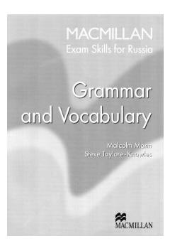

ESIngliz tili EGE va B2 imtihonlariga tayyorgarlik ko'rish uchun mo'ljallangan grammatika va leksika qo'llanmasi.
Ushbu qo'llanma o'quvchilarga ingliz tilidan Yevropa standarti bo'yicha B2 darajasiga va Yagona davlat imtihoniga (EGE) tayyorgarlik ko'rishda yordam berish uchun mo'ljallangan. Kitobda turli leksik va grammatik mavzular, nazariy material hamda imtihon formatidagi amaliy mashqlar keltirilgan. Shuningdek, o'tilgan materiallarni mustahkamlash uchun takrorlash bo'limlari va testlar mavjud.